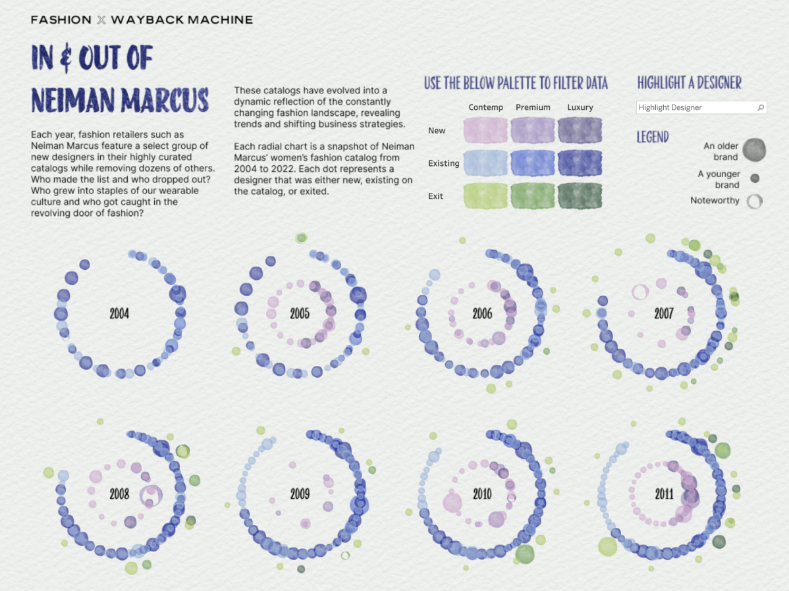
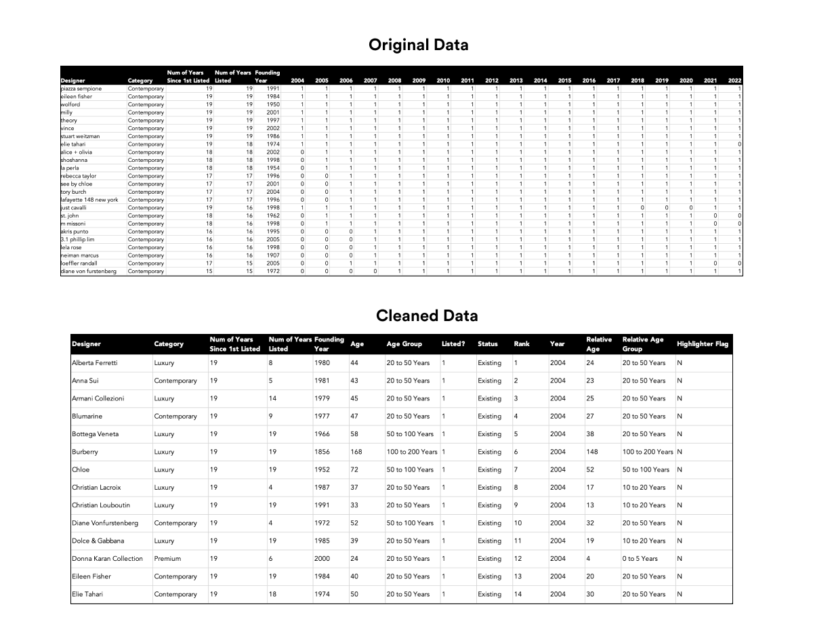

Concept
A fashion catalog is more than just a list of names. When looking at a catalog from a historical snapshot view, trends emerge and patterns develop. From the rise of the contemporary segment to the downfall of diffusion lines, and from the transformation of streetwear from subculture to high fashion, to luxury brands' collective reluctance to transact online, in the ever-changing landscape of fashion, who's in and who's out of a catalog paints the picture of the zeitgeist: what and how people wear and how businesses respond to it.
Data Acquisition
I first used Beautifulsoup to scrape the snapshots of Neiman Marcus' women's fashion catalog on Wayback Machine. I extracted the data and gave each designer a binary flag of 0 and 1 for each year it was on the catalog. I then transformed the data and found the entry and exit (if available) years for the designer and added in context such as age, founding year, and commentary.
Chart Considerations
I went through several iterations on chart type as it's a lot of data to display for each year and I would like to introduce many different dimensions. I experimented with beeswarm, packed bubble charts and eventually decided to use small multiples of radial bubble chart as this combination is more generous with space and allows me to divide the data into a few more dimensions - size for age, radius for status, color for segment.
Design
I went with a low-tech design using watercolor, paper grain, and hand written font. There are some legibility issues with the dots and hopefully with the help of filters and highlighter, they are mitigated.In & Out of Neiman Marcus
Data Viz
In this Data Viz, I invite fellow fashion enthusiasts to examine Neiman Marcus' historical catalog from 2004 to 2022. By observing the volume trend of each segment from contemporary to luxury, who entered and exited alongside whom and when, you can almost paint a picture of what happened in fashion in the past two decades!
Charts I built:
- Radial Bubble Chart
- Small Multiples